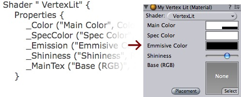
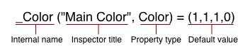

Previous
Previous
This tutorial will teach you how you can create your own shaders and make you game look a lot better!
Unity is equipped with a powerful shading and material language called ShaderLab. In style it is similar to CgFX and Direct3D Effects languages - it describes everything needed to display a material, not just plain vertex/pixel shaders.
Shaders describe properties that are exposed in Unity's material inspector and multiple shader implementations (SubShaders) targeted at different graphics hardware capabilities, each describing complete OpenGL rendering state, fixed function pipeline setup or vertex/fragment programs to use. Vertex and fragment programs are written in high-level Cg programming language or low-level shader assembly.
In this tutorial we describe how to write shaders in ShaderLab using both fixed function and programmable pipelines. We assume that the reader has a basic understanding of OpenGL render states, fixed function and programmable pipelines and has some knowledge of Cg programming language. Some shader tutorials can be found on shadertech website.
Getting started
To create a new shader, either choose Assets->Create->Shader from the main menu, or duplicate an existing shader, and work from that. The new shader can be edited by double-clicking it in the project view.
We'll start with a very basic shader:
Shader "Tutorial/Basic" {
Properties {
_Color ("Main Color", Color) = (1,0.5,0.5,1)
}
SubShader {
Pass {
Material {
Diffuse [_Color]
}
Lighting On
}
}
}
This simple shader demonstrates one of the most basic shaders possible. It defines a color property called "Main Color" and assigns it a default value of rose-like color (red=100% green=50% blue=50% alpha=100%). It then renders the object by invoking a Pass and in that pass setting the diffuse material component to the property _Color and turning on the vertex lighting.
To test this shader, create a new material, select the shader from the drop-down menu (Tutorial->Basic) and assign the material to some object. Tweak the color in the material inspector and watch the changes. Time to move onto more complex things!
Basic Vertex Lighting
If you open an existing complex shader, it can be a bit hard to get a good overview. To get you started, we will dissect the built-in VertexLit shader that ships with Unity. This shader uses OpenGL's fixed function pipeline to do per-vertex lighting.
Shader " VertexLit" {
Properties {
_Color ("Main Color", Color) = (1,1,1,0.5)
_SpecColor ("Spec Color", Color) = (1,1,1,1)
_Emission ("Emmisive Color", Color) = (0,0,0,0)
_Shininess ("Shininess", Range (0.01, 1)) = 0.7
_MainTex ("Base (RGB)", 2D) = "white" { }
}
SubShader {
Pass {
Material {
Diffuse [_Color]
Ambient [_Color]
Shininess [_Shininess]
Specular [_SpecColor]
Emission [_Emission]
}
Lighting On
SeperateSpecular On
SetTexture [_MainTex] {
constantColor [_Color]
Combine texture * primary DOUBLE, texture * constant
}
}
}
}
All shaders start with the keyword Shader followed by a string that represents the name of the shader. This is the name that is shown in the inspector. All code for this shader must be put within the curly braces after it: { } (called a block).
- The name should be short and descriptive. It does not have to match the .shader file name.
- To put shaders in submenus in Unity, use slashes - e.g. "MyShaders/Test" would be shown as "Test" in a submenu called "MyShaders".
The shader is composed of a Properties block followed by SubShader blocks. Each of these is described in sections below.
Properties
At the beginning of the shader block you can define any properties that artists can edit in the material inspector. In the VertexLit example the properties look like this:

The properties are listed on separate lines within the Properties block. Each property starts with the internal name (_Color, _MainTex). After this in parentheses comes the name shown in the inspector and the type of the property. After that, the default value for this property is listed:

The list of possible types are in the properties reference. The default value depends on the property type. In the example of a color, the default value should be a four component vector.
We now have our properties defined, and are ready to start writing the actual shader.
The Shader Body
Before we move on, let's define the basic structure of a shader file.
Different graphic hardware has different capabilities. For example, some graphics cards support fragment programs and others don't; some can lay down four textures per pass while the others can do only two or one; etc. To allow you to make full use of whatever hardware your user has, a shader can contain multiple SubShaders. When Unity renders a shader, it will go over all subshaders and use the first one that the hardware supports.
Shader "Structure Example" {
Properties { /* ...shader properties... }
SubShader {
// ...subshader that uses vertex/fragment programs...
}
SubShader {
// ...subshader that uses four textures per pass...
}
SubShader {
// ...subshader that uses two textures per pass...
}
SubShader {
// ...subshader that might look ugly but runs on anything :)
}
}
This system allows Unity to support all existing hardware and maximize the quality on each one. It does, however, result in some long shaders.
Inside each SubShader block you set the rendering state shared by all passes; and define rendering passes themselves. A complete list of available commands can be found in the subshader reference.
Passes
Each subshader is a collection of passes. For each pass, the object geometry is rendered, so there must be at least one pass. Our VertexLit shader has just one pass:
// ...snip...
Pass {
Material {
Diffuse [_Color]
Ambient [_Color]
Shininess [_Shininess]
Specular [_SpecColor]
Emission [_Emission]
}
Lighting On
SeperateSpecular On
SetTexture [_MainTex] {
constantColor [_Color]
Combine texture * primary DOUBLE, texture * constant
}
}
// ...snip...
Any commands defined in a pass configures the graphics hardware to render the geometry in a specific way.
In the example above we have a Material block that binds our property values to the OpenGL's material settings. The command Lighting On turns on the standard vertex lighting, and SeperateSpecular On enables the use of a separate color for the specular highlight.
All of these command so far map very directly to the fixed function OpenGL hardware model. Consult OpenGL red book for more information on this.
The next command, SetTexture, is very important. These commands define the textures we want to use and how to mix, combine and apply them in our rendering. SetTexture command is followed by the property name of the texture we would like to use (_MainTex here) This is followed by a combiner block that defines how the texture is applied. The commands in the combiner block are executed for each pixel that is rendered on screen.
Within this block we set a constant color value, namely the color of the material, _Color. We'll use this constant color below.
In the next command we specify how to mix the texture with the color values. We do this with the Combine command that specifies how to blend the texture with another one or with a color. Generally it looks like this:
Combine ColorPart, AlphaPart
Here ColorPart and AlphaPart define blending of color (RGB) and alpha (A) components respectively. If AlphaPart is omitted, then it uses the same blending as ColorPart.
In our VertexLit example:
Combine texture * primary DOUBLE, texture * constant
Here texture is the color coming from the current texture (here _MainTex). It is multiplied (*) with the primary vertex color. Primary color is the vertex lighting color, calculated from the Material values above. Finally, the result is multiplied by two to increase lighting intensity (double). The alpha value (after the comma) is texture multiplied by constant value (set with constantColor above). Another often used combiner mode is called previous (not used in this shader). This is the result of any previous SetTexture step, and can be used to combine several textures and/or colors with each other.
Summary
Our VertexLit shader configures standard vertex lighting and sets up the texture combiners so that the rendered lighting intensity is doubled.
We could put more passes into the shader, they would get rendered one after the other. For now, though, that is not nessesary as we have the desired effect. We only need one SubShader as we make no use of any advanced features - this particular shader will work on any graphics card that Unity supports.
The VertexLit shader is one of the most basic shaders that we can think of. We did not use any hardware specific operations, nor did we utilize any of the more special and cool commands that ShaderLab and Cg has to offer.
In the next chapter we'll proceed by explaining how to write custom vertex & fragment programs using Cg language.